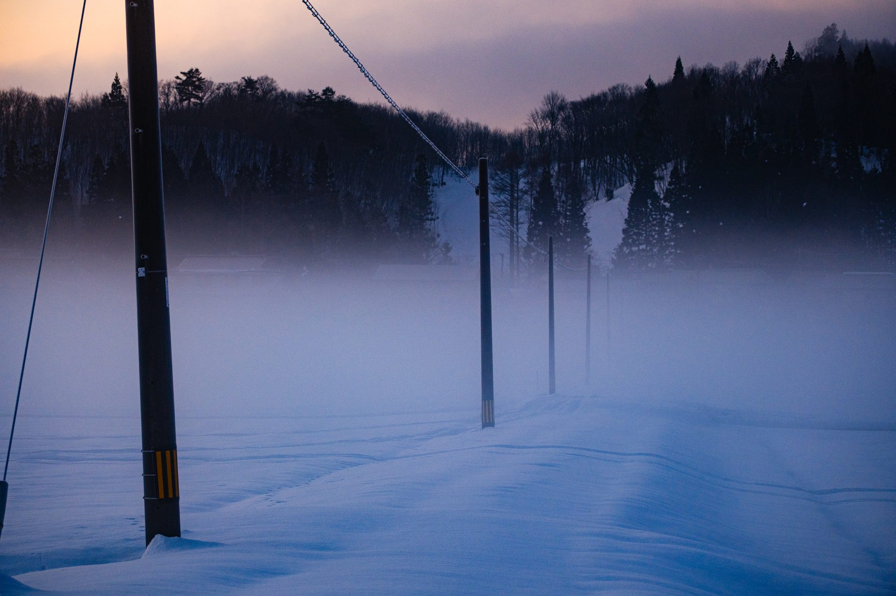
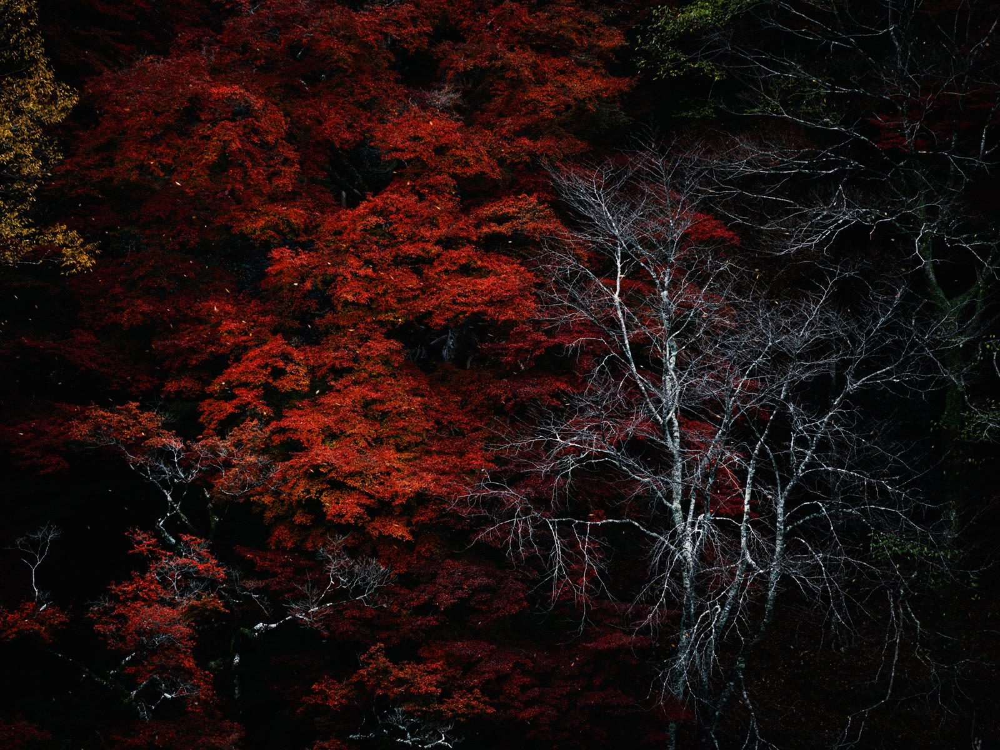
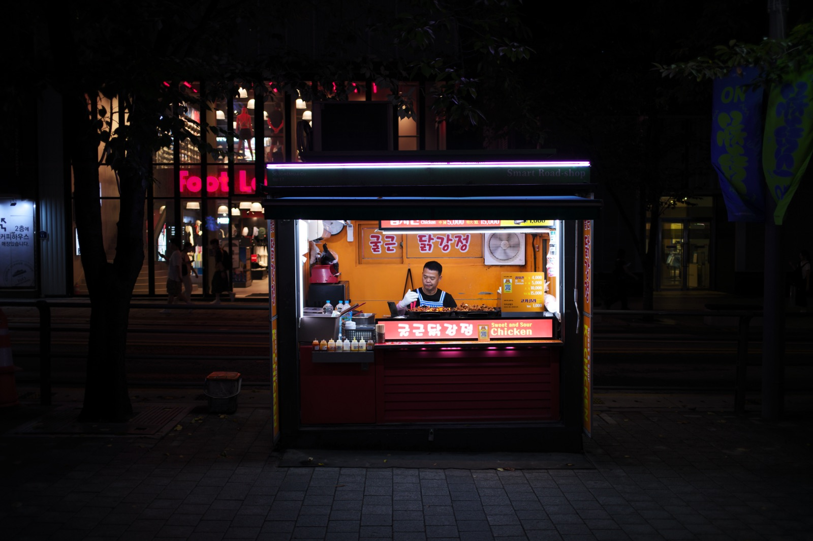

夏の水面 · Summer Waters
葉崇揚Yeh Chung-Yang
Green maples over water, koi undisturbed.
A scholar's desk, a photographer's four seasons — touch the water, and enter.
水にふれてください。夏の、しずかな一波。
Touch · drag · right-click to ripple the water

雪明 · 冬 Cold Air寒氣一 Chapter · One
Scholarship學術
The Department of Sociology at Soochow University, Taipei. A researcher of the welfare state and social policy — searching, between institutions, class, and generations, for the lives the numbers leave in shadow. 東呉大学社会学部。福祉国家と社会政策の研究。
The papers breathe here, one by one — like bare trees mirrored on a winter lake, quietly holding the outline of an age.
Enter →二 Chapter · Two
Photography攝影
For nearly thirty years, another way of seeing has run alongside the research. Nine seasonal series — Harugasumi, Aoarashi, Kōyō, Yukiakari, Shiosai, Sansui, Machi, Ginen, and Xpan — keeping the light of every walk on film. 研究と並走してきた、もう一つの眼差し。九つの季節。
The garden becomes a book, turned one page at a time — the seasons revolving within it, its light and shadow kept.
Enter →The same path of blossoms — how many times now. 同一條花徑，走過已是第幾回。

紅葉 · 秋 White and Crimson白與紅三 Chapter · Three
Teaching教學
A small entrance, a large conversation. The classroom is ichi-go ichi-e — each meeting comes only once, and so is met with particular care. 小さな入口、大きな対話。一期一会の教室。
Social policy, comparative welfare, research methods — abstract theory turned into something you can actually understand and use.
Enter →
街 · 夜 Night Stall夜屋台四 Chapter · Four
Essays隨筆
Essays and commentary from outside the research — on society, on a single lamp at a street corner, on the things that never made it into a paper yet were never quite set down. 研究の外側の、随筆と評論。街角の灯のこと。
A night stall lights up, steam rising — a single life, still going on. Writing is the little warmth kept for it.
Enter →